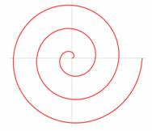
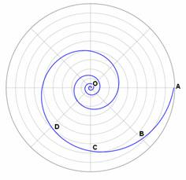

Spirals
A spiral is a curve traced by a point moving along a line in one direction,
while the line is rotating
in a plane about one of its ends or any point on it. e.g. Turbine casing,
spiral casings. etc. In other words it is the locus of a point which moves
around a centre, called the pole, while moving towards or away from the
centre.
The point which generates the curve is called the generating point or
tracing point. The point will move along a line called the radius vector
while the line itself rotates about one of its end points.
Generally for engineering applications two types of spirals are encountered.
They are:
1. Archemedian Spiral: The curve traced out by a point moving in such a way that its movement towards or away from the pole is uniform with the increase in the vectorial angle from the starting line.
Applications include teeth profile of helical gears, profile of cams, etc. A typical Archemedian spiral is shown in figure .

Figure. A typical archemedian Spiral
2. Logarithmic Spiral : The ratio of the lengths of consecutive radius vectors enclosing equal angles is always constant. i.e. the values of the vectorial angles are in arithmetic progression and the corresponding values of radius vectors are in geometric progression. A typical logarithmic spiral is shown in figure .

Figure A typical Logarithemic spiral